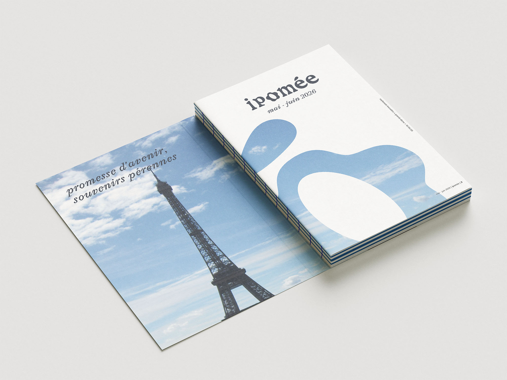
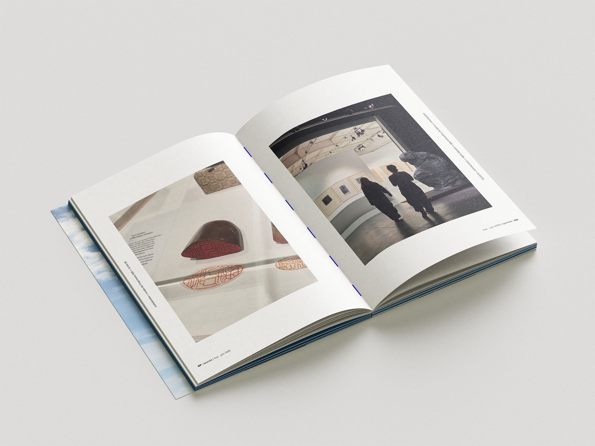

Ipomée
édition
Ipomée est une revue bimestrielle personnelle, elle compile mes photographies quotidiennes, des pages remplies de proches et de lieux fixés sur le papier, matérialisant mes souvenirs.
« Promesse d’avenir, souvenirs pérennes »
Ipomée is a personal bimonthly magazine, it compiles my daily photographs, pages filled with close friends, family and places fixed on paper, materializing my memories.
"Promise of a future, lasting memories"
Objectif : concevoir les couvertures et intérieurs de la revue en composant uniquement avec mes photographies de manière épurée pour les mettre en valeur
The aim was to design the covers and interiors of the magazine by composing only with my photographs in a refined way to highlight them.
magazine album


La revue se veut nostalgique au premier abord, on vient y replonger pour se ressasser des tranches de vie, les partager avec des proches et se rappeler des petites choses.
The magazine is meant to be nostalgic at first glance; we come back to it to rehash slices of life, share them with loved ones and remember little things.

« Tout commence avec cet appareil photo, le Canon IXUS 80 IS, que j’ai piqué à mon père depuis maintenant un an et demi. Petite, je l’emmenais en sortie scolaire pour faire des photos floues, à présent il répertorie toutes mes soirées, mes vacances... le quotidien et le banal se figent et deviennent mémorables. »